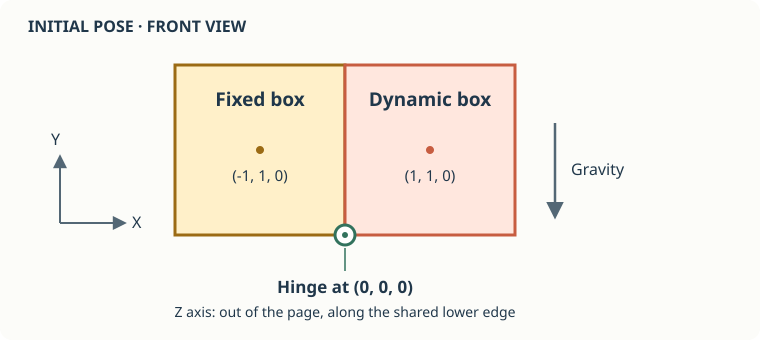

Project Setup
Connect two boxes with a hinge and watch gravity swing one of them down. This tutorial introduces joints, the constraints inside them, and Jitter's debug drawing interface.
The left box is fixed. The right box starts beside it along the X axis. Their hinge runs along the lower edge of the touching faces, parallel to the Z axis.

We will draw the boxes and the hinge entirely through IDebugDrawer. Raylib supplies the window, camera, and drawing commands; Jitter supplies the geometry. No meshes, textures, or body transformation matrices are needed.
Create the project
Install the .NET 10 SDK, then create a console application:
mkdir HingeDemo
cd HingeDemo
dotnet new console --framework net10.0
dotnet add package Jitter2 --version 2.13.0
dotnet add package Raylib-cs --version 6.1.1
This tutorial uses the colored IDebugDrawer API available in Jitter2 2.13.0. Both DrawSegment and DrawTriangle receive a packed color.
What we will build
- Create the boxes and hinge, and understand the degrees of freedom it removes.
- Implement the debug drawer and connect it to Raylib.
- Run Hello World, with the complete code and a recording of the result.
The complete Program.cs appears on the last page. The program starts paused so you can inspect the initial arrangement; press Space to release the right box or pause it again.